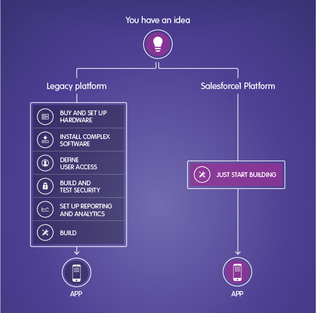
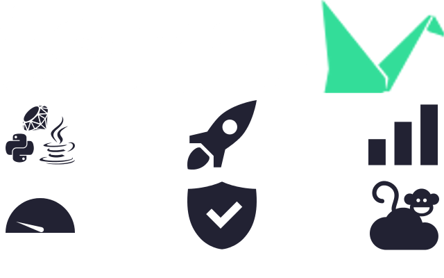

Explorando o Tsuru
Open Source Platform As A Service (PaaS)

by Elysson MR / @elyssonmr
Agenda
- Introdução
- Conceitos
- O Tsuru
- Estudo de caso
- Como Contribuir com o Projeto do Tsuru
- Conclusão
- Referências
Introdução
- Alguns Problemas Com as Entregas do Nosso Produto;
- Entregas de Software Constantes;
- Processo de Entrega Demorado;
- Economia de Recursos;
- Diversos Clientes com Personalizações;
Conceitos - PaaS
- É um modelo para executar aplicações sem a preocupação de manter o hardware e a infraestrutura de software;
- O provedor entrega ferramentas de hardware e de software, geralmente necessárias para o desenvolvimento de aplicativos;
- As etapas do desenvolvimento de software passam a ser na nuvem (Desenvolvimento do código, compilação, debug, deploy e teste);
Conceitos - PaaS
Fonte: Sales Force
Conceitos - PaaS
- O PaaS é vantajoso para poupar custos, não usar hardware desnecessário enquanto que ao mesmo tempo que é possível escalar os dados de forma simples;
- Exemplos: Heroku, GAE, force.com (sales force)
O Tsuru
O Tsuru - O que é?
- É um PaaS Open Source e extensivel;
- Faz com que o deploy das aplicações ocorra de forma rápida e fácil;
- Devido as suas funcionalidades o desenvolvedor só se preocupa com o desenvolvimento de seu aplicativo;
- Criado pelo Pessoal da globo.com (Brasilsilsilsil \o/);
- Feito em com a linguagem GO;
O Tsuru - Caracteristicas
- Rápido e fácil de criar um deploy continuo utilizando somente um "git push";
- Fácil de se criar o deploy de versões de teste e produção para a aplicação;
- Para escalar a aplicação basta adicionar uma "unidade" no Tsuru que ele toma conta do restante;
- O tsuru possí um conjunto de ferramentas que garantem que a aplicação sempre estará disponivel;
O Tsuru - Caracteristicas
- Utiliza o Docker para empacotar, entregar e executar qualquer aplicação;
- A API do tsuru distribuí as aplicações entre os diversas Nodos (máquinas virtuais ou físicas);
- O tsuru possuí containers que tem tudo que é necessário para uma aplicação ser executada;
- Utiliza uma arquitetura de serviços para prover funcionalidades extras para as aplicações;
O Tsuru - Instalação
- Existem 2 maneiras de Instalar:
- Tsuru Now
- Instalação de todos os componentes na mão para os fortes;
O Tsuru - Instalação
- Primeiro é necessário efetuar uma pré configuração no gerenciador de pacotes do Sistema Operacional;
sudo apt-get update
sudo apt-get install curl python-software-properties
sudo apt-add-repository ppa:tsuru/ppa -y
sudo apt-get update
O Tsuru - Instalação
- A primeira dependência é o Gandalf;
- REST api para gerenciamento de repositórios GIT, usuários e controle de acesso;
- Necessário para poder utilizar o "git push" para deploy;
sudo apt-get install gandalf-server
O Tsuru - Instalação
- Instalação do próprio tsuru;
- Ele depende, além do Gandalf, do MongoDB e do Redis;
sudo apt-get install tsuru-server -qqy
O Tsuru - Instalação
- A última depedência e etapa da instalação é o Hipache;
- O tsusu utiliza o Hipache para direcionar as as requisições para seus containers;
- Essas rotas são armazenadas no Redis;
sudo apt-get install tsuru-server -qqy
O Tsuru - Inicialização
- Após a instalção é necessário adicionar pelo menos 1 nó;
- Primeiro o tsuru irá ler a configuração no arquivo de configuração em busca do provedor de IaaS para a criação dos nós, exemplo:
iaas:
default: ec2
node-protocol: http
node-port: 2375
ec2:
key-id: xxxxxxxxxxx
secret-key: yyyyyyyyyyyyy
O Tsuru - Inicialização
- Para criar um nó basta utilizar o comando abaixo;
tsuru-admin docker-node-add iaas=ec2
O Tsuru - Criando um app
- Para criar um app é necessário se logar no tsuru e utilizar o comando para criar o aplicativo;
- Durante a criação do aplicativo escolhemos qual o seu nome e plataforma;
tsuru user-create youremail@domain.com
tsuru login youremail@domain.com
tsuru app-create blog python
O Tsuru - Criando um app
- Para Fazermos um deploy da aplicação precisamos saber qual o seu endereço GIT remoto;
tsuru app-info --app blog
Application: blog
Repository: git@git.tsuru.io:blog.git
Platform: python
Teams: tsuruteam
Address:
O Tsuru - Executando o aplicativo
- Após o "git push" podemos verificar que o app já esta sendo executado;
- O tsuru irá procurar pelo arquivo chamado "Procfile" que contêm como executar a aplicação (conceito "emprestado" do Foreman);
$ tsuru app-info
Application: blog
Repository: git@git.tsuru.io:blog.git
Platform: python
Teams: tsuruteam
Address: blog.cloud.tsuru.io
Units:
+--------------+---------+
| Unit | State |
+--------------+---------+
| 9e70748f4f25 | started |
+--------------+---------+
Estudo de Caso
- Nosso Cenário hoje:
- Equipe de desenvolvimento de apenas 4 integrantes para desenvolver 2 sistemas (3 plenos e 1 trainee);
- Um único software para diversos clientes;
- Cada cliente possuí algumas personalizações particulares no sistema;
- Os deploys são feitos manualmente;
- Devem ser feito testes nessas personalizações;
- Cada cliente possuí uma instância na Amazon;
Estudo de Caso
- Onde precisamos chegar:
- Precisamos automatizar mais testes antes de cada deploy;
- Precisamos ter um deploy automático para todos os clientes;
- O sistema deve voltar para o ar quando houver algum problema;
- Seria interessante o nosso sistema ser único para todos os clientes;
- Quando houver muitos usuários utilizando o sistema de leilão, o mesmo alocar mais recursos para poder suportar todos os acessos;